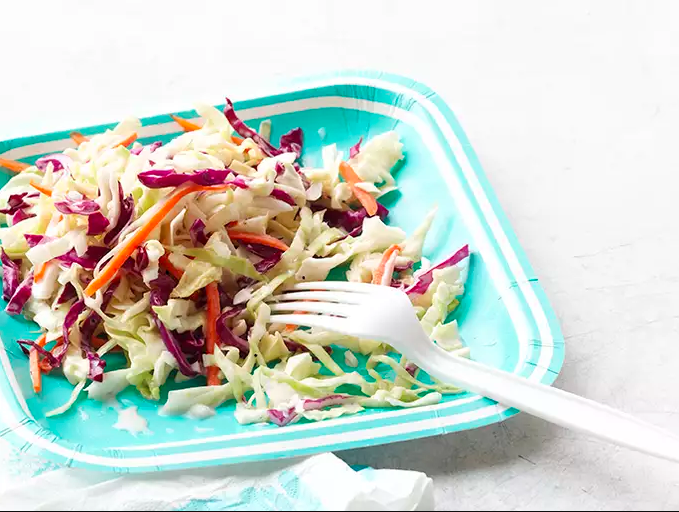

Salad Recipe
Salad

Description
This is a recipe for a vegetable salad
Ingredients
- 1 (14 ounce) package coleslaw mix
- ¼ cup finely chopped yellow onion
- ½ cup mayonnaise
- ¼ cup sugar
- 2 tablespoons milk
- 2 tablespoons buttermilk
- 2 tablespoons vinegar
- ½ teaspoon salt
- ⅛ teaspoon black pepper
Steps
- Stir together coleslaw mix and onion in a large bowl.
-
Whisk together mayonnaise, sugar, milk, buttermilk, vinegar, salt, and
pepper in a second bowl until smooth. Pour dressing over slaw; stir
well and chill at least 2 hours or up to overnight.